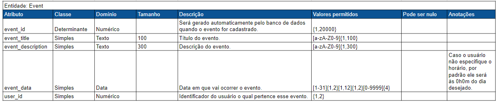
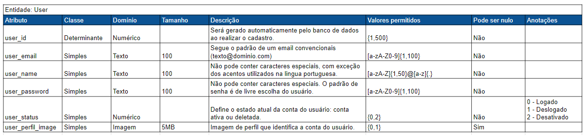

Um dicionário de dados é uma coleção de nomes, atributos e definições sobre elementos de dados que estão sendo armazenados para uma aplicação os utilizar. Eles são úteis para a construção das tabelas de dados de forma que mantenham fidelidade às especificações da aplicação. Tendo o dicionário de dados como auxílio as chances de se cometerem erros na construção do banco de dados são menores.
 